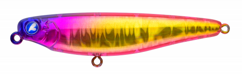
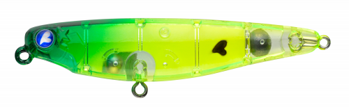
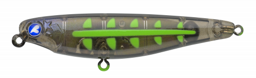
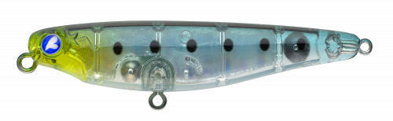

チュパコ55
（CHUPAKO 55）
チュパコ55はBlueBlue（ブルーブルー）のトップウォータープラグです。
「いるけど喰わない」魚に口を使わせるための、喰わせの最終手段として作られたモデル。ラインの揺れで逃げてしまうようなスレた魚でも、コンパクトなシルエットと小さなカップが生む弱々しい泡で、違和感なくバイトさせます。

画像出典:BlueBlue公式HP
スペック
- メーカー
- BlueBlue（ブルーブルー）
- タイプ
- トップウォーター（フローティング）
- 全長
- 55mm
- 自重
- 3g
- フック
- #10×2
- リング
- #1
- ターゲット
- チヌ・キビレ・シーバス
- 価格
- 1,600円（税別）
▼今すぐチェック

チュパコ55の特徴
「弱く気付かせる」アピールで、スレた魚に口を使わせる
-
見切られにくいコンパクトなシルエット
ハイプレッシャーな魚でも思わず口を使ってしまう、55mmのコンパクトなシルエット。見えている魚や、やる気のない魚にも効きます。
-
3gでも細身でよく飛ぶ
3gと軽いながら細身のボディでよく飛び、魚に気付かれにくい距離からアプローチできます。
-
小さなカップで弱々しい泡
小さなカップが弱々しい泡を出し、「弱く気付かせる」絶妙なアピール。水を押しすぎないので、違和感を与えにくくなっています。
チュパコ55の使い方
基本はロッドを小刻みに動かしてのポッピングとただ巻き。小さな泡を出しながら、弱々しく水面を移動させます。
見えている魚には、魚の進行方向の少し先に投げて、ゆっくり誘うのがおすすめ。反応が渋いときはポーズを長めに取りましょう。
チュパコ55の得意な状況
トップチニングで、チヌが見えているのに食わないときや、ほかのトップでは見切られてしまうとき。干潟や河川のシャロー、港湾の際など、プレッシャーの高い場所に向いています。
ワンポイント
魚に気付かせる力は控えめなので、まずはチュパゾー60やガボッツ65で寄せて、反応はあるのに食わないときにチュパコ55に持ち替えるのがおすすめです。
BlueBlueのトップチニング用ルアーの使い分け
| モデル | 全長／自重 | 得意な場面 |
|---|---|---|
| チュパコ55 | 55mm／3g | スレた魚に口を使わせる喰わせ担当（本記事のモデル） |
| チュパゾー60 | 60mm／7g | 魚に気付かせて寄せる力が強いポッパー |
| ガボッツ65 | 65mm／6g | ポッピングと引き波を使い分けられるスイミングポッパー |
寄せる力の強いルアーで探り、食わないときにチュパコで喰わせる。役割を分けてローテーションしましょう。
人気カラー
公式ラインナップから4色を紹介します（カラー名は公式の表記のまま）。

#38 ゴールデンゲンガーゴールド系のアピールカラー。濁りや光量の少ない時間帯に。

#61 ライムチャートライム系のチャート。ルアーの位置を見ながら操作したいときに。

#62 ブラックボーン骨のような模様の黒系カラー。シルエットをはっきり見せたいときに。

#93 マイクロン個性的なカラー。定番色に反応がないときのローテーションに。
画像出典:BlueBlue公式HP
チュパコ55に似ているルアー
-
 チュパゾー60
ブルーブルー
詳細はこちら＞
チュパゾー60
ブルーブルー
詳細はこちら＞
全長60mm・自重7gのポッパー。同じBlueBlueで、もっと魚に気付かせたいときに。
-
 ミニコバコ
GOTO9
詳細はこちら＞
ミニコバコ
GOTO9
詳細はこちら＞
全長53mmのポッパー。同じくらいのサイズで、もう少しアピールしたいときに。
-
 カーバンクル・リリー58F
アクアウェーブ
詳細はこちら＞
カーバンクル・リリー58F
アクアウェーブ
詳細はこちら＞
全長58mmのペンシルベイト。ポッピングではなく、ドッグウォークで見せたいときに。